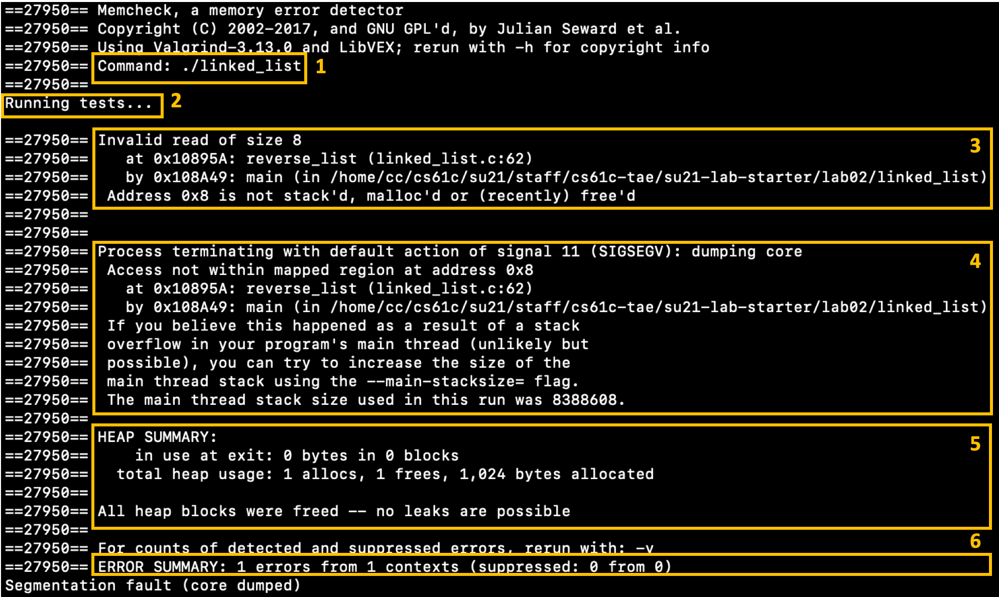
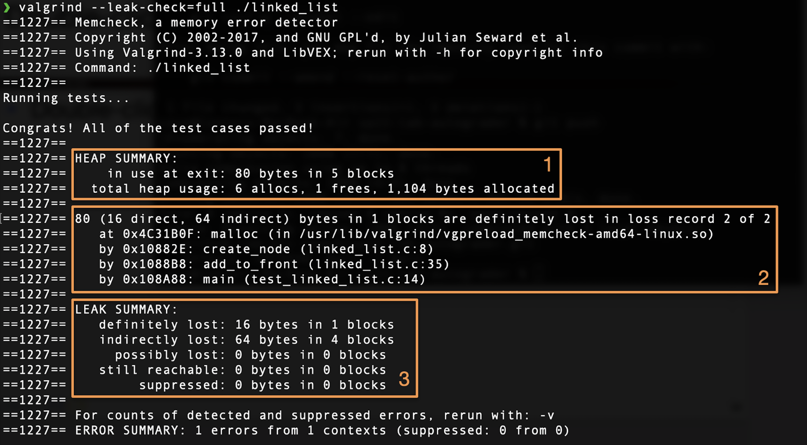

Lab 2: C Memory Management, Valgrind
Deadline: Monday, February 7, 11:59:59 PM PT
Setup
In your labs directory, pull the files for this lab with:
If you get an error like the following:
fatal: 'starter' does not appear to be a git repository
fatal: Could not read from remote repository.
make sure to set the starter remote as follows:
and run the original command again.
Exercise 1: Bit Operations
For this exercise, you will complete bit_ops.c by implementing the bit manipulation functions get_bit, set_bit, and flip_bit (shown below). You may ONLY use bitwise operations such as and (&), or (|), xor (^), not (~), left shifts (<<), and right shifts (>>). You may not use any for/while loops or conditional statements. You also may not use modulo (%), division, addition, subtraction, or multiplication for this question.
/* Returns the Nth bit of X. Assumes 0 <= N <= 31. */
unsigned
/* Set the nth bit of the value of x to v. Assumes 0 <= N <= 31, and V is 0 or 1 */
void
/* Flips the Nth bit in X. Assumes 0 <= N <= 31.*/
void
Once you complete these functions, you can compile and run your code using the following commands:
This will print out the results of the tests.
Exercise 2: Valgrind
Even with a debugger, we might not be able to catch all bugs. Some bugs are what we refer to as "bohrbugs", meaning they manifest reliably under a well-defined, but possibly unknown, set of conditions. Other bugs are what we call "heisenbugs", and instead of being determinant, they're known to disappear or alter their behavior when one attempts to study them. We can detect the first kind with debuggers, but the second kind may slip under our radar because they're (at least in C) often due to mis-managed memory. Remember that unlike other programming languages, C requires you (the programmer) to manually manage your memory.
We can use a tool called Valgrind to help catch to help catch "heisenbugs" and "bohrbugs". Valgrind is a program which emulates your CPU and tracks your memory accesses. This slows down the process you're running (which is why we don't, for example, always run all executables inside Valgrind) but also can expose bugs that may only display visible incorrect behavior under a unique set of circumstances.
Using Valgrind to find segfaults
In Lab 1, you learned how to find segfaults using cgdb. You can also use Valgring to find segfaults.
- Edit the
Makefileto include the-gflag inCFLAGSto provide debugging information to Valgrind. - Compile
linked_list.candtest_linked_list.cby executing
(If it says that there is nothing to be done, run make clean and then run make again to make sure that it compiles with the newly added -g flag)
- Run valgrind on the executable using the following command:
By default, memcheck is the tool that is run when you invoke Valgrind. The documentation on Valgrind's memcheck is very useful, as it provides examples of the most common error messages, what they mean, and some optional arguments you can use to help debug them.
Your output should look something like this. There is a lot of information here, so let's parse through it together.

Box 1. This shows us the command that we are running through Valgrind.
Box 2. This is a print statement from our program.
Box 3. We are reading 8 bytes from an invalid memory address on linked_list.c line 62.
Box 4. Our program received a segfault by accessing invalid memory on linked_list.c line 62
Box 5. There were no memory leaks at the time that the program exited.
Box 6. We encountered 1 error.
- Remember from Lab01 that
(*head)->nextproduced a segfault because we forgot to check if*head==NULL. Fix this error, run your code through Valgrind again, and you should see that there are no errors reported by valgrind.
Using Valgrind to detect memory leaks
- Let's cause a memory leak in
test_linked_list.c. Comment out the line that callsfree_list. - Run
make linked_listto compile your code. - Run valgrind
- We can see that our program is still producing the correct result based on the printed messages "Congrats..."; however, we are now experiencing memory leaks. Valgrind tells us to "Rerun with --leak-check=full to see details of leaked memory", so let's do that
Your output should look something like this. There is a lot of information here, so let's parse through it together. 
Box 1. Summary of heap usage. There were 80 bytes allocated in 5 different blocks in the heap at the time of exit.
Box 2. Stack trace showing where the unfreed blocks were allocated.
- Direct blocks are those which are root nodes (blocks of memory that the programmer has direct access to, ex stack/global pointer to the heap).
- Indirect blocks are those which are not root nodes (ex a pointer inside of a struct).
Box 3. Summary of leak. You can find more info about memory leaks in the Valgrind docs
You can use the stack trace to see where the unfreed blocks were allocated. Hopefully this example will help you understand Valgrind messages when you are completing your projects
Exercise 3: Memory Management
This exercise uses vector.h, test_vector.c, and vector.c, where we provide you with a framework for implementing a variable-length array. This exercise is designed to help familiarize you with C structs and memory management in C.
-
Try to explain why
bad_vector_new()andalso_bad_vector_new()are bad. Hint: One of these functions will actually run correctly (assuming correctly modifiedvector_new,vector_set, etc.) but there may be other problems. We have provided the reasons here, so you can verify your understandingbad_vector_new()
The vector is created on the stack, instead of the heap. All memory stored on the stack gets freed as soon as that function finishes running, so when the function returns, we lose the vector we constructed.also_bad_vector_new()
While this does work, it is rather inefficient. The vector object is a "Big" thing, so when we return it, we need to copy a lot of data from the return value to the calling frame. Instead, it is generally better practice to store structs on the heap, and pass around pointers, as pointers are a fixed, "Small" size. -
Fill in the functions
vector_new(),vector_get(),vector_delete(), andvector_set()invector.cso that our test codetest_vector.cruns without any memory management errors.Comments in the code describe how the functions should work. Look at the functions we've filled in to see how the data structures should be used. For consistency, it is assumed that all entries in the vector are 0 unless set by the user. Keep this in mind as
malloc()does not zero out the memory it allocates.
Test your implementation of vector_new(), vector_get(), vector_delete(), and vector_set() for both correctness and memory management (details below).
# 1) to check correctness
# 2) to check memory management using Valgrind:
Any number of suppressed errors is fine; they do not affect us.
Feel free to also use CGDB to debug your code.
Exercise 4
Please fill out this short survey about your experience with the lab. Your responses will be used to improve the lab in the future. The survey will be collecting your email to verify that you have submitted it, but your responses will be anonymized when the data is analyzed. Thank you!
Submission
Save, commit, and push your work, then submit to the Lab 2 assignment on Gradescope.